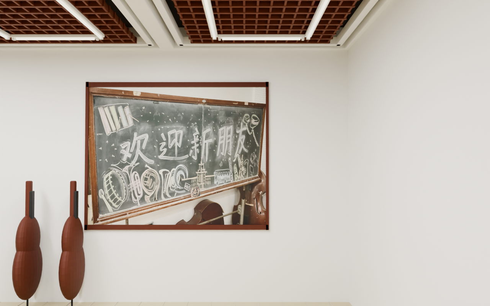
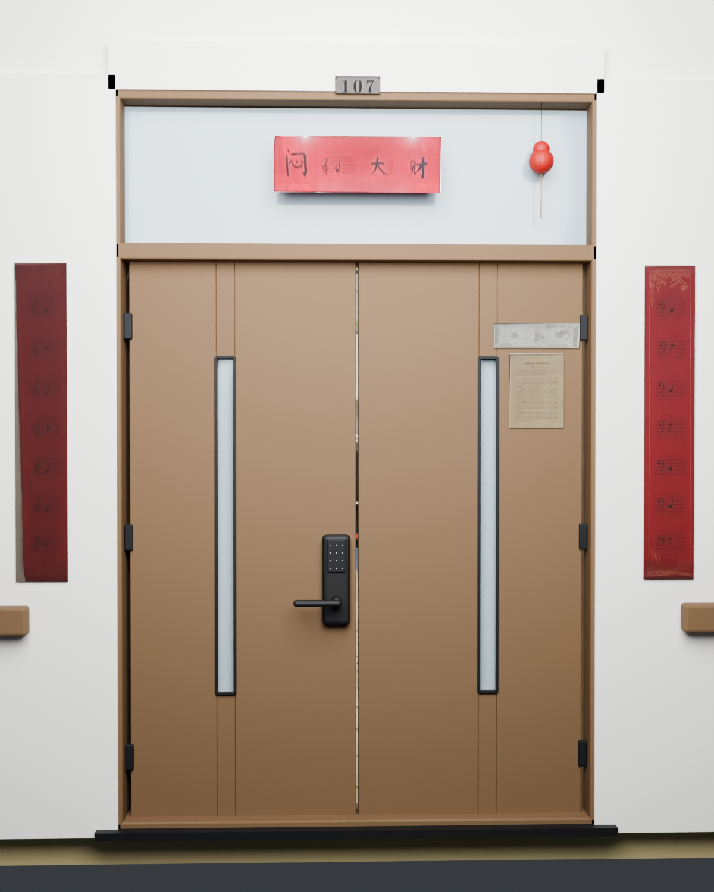

A place we used to play
排练室记忆旧址 · 三维影像档案
房间搬走了，声音却还留在这里。我们用 iPhone 扫描、旧照片和回忆，重新拼起这间曾经熟悉的排练室。还记得门锁的密码吗？推开门，再走进 Room 107。
107
熟悉的门，
还在等你回来。
ROOM 107 ／ 室内漫游
按住画面拖动环顾 · WASD / 方向键行走 · Shift 慢走
ROOM 107 · WALK INSIDE解锁进入 · 电脑键盘行走 · 手机摇杆漫游
43Chairs · 椅凳
24Music stands · 谱架
01Room · 排练室
留在墙上的声音
黑板上的粉笔字、门边的音符对联，还有那些搬不走的细节。


“空间会变，
一起演奏过的日子不会。”
这是一份由照片与低精度扫描共同重建的空间档案。由于没有原始测绘尺寸，房间比例为参考物估算；模型用于回忆与浏览，不作为工程测量。走过椅子与谱架，找找那些曾经熟悉的角落。